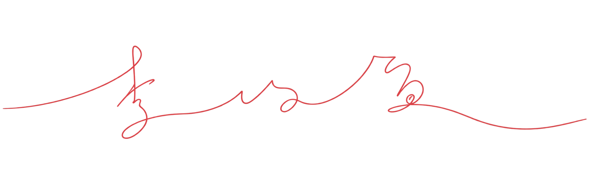

Publications
Research
Journal articles, and conference proceedings
Open research page →
Hello, I’m
Decision-Making · Complex Systems
I’m interested in how complex systems make decisions, adapt, and give rise to emergent behaviors. My research explores how local decisions and interactions shape collective patterns and system-level dynamics.

About
流水不争先，争滔滔不绝
I’m interested in understanding how individual decisions and local interactions produce larger-scale patterns, behaviors, and unexpected outcomes.
My current research draws on probabilistic decision-making, reinforcement learning, information theory, and computational modeling. I’m especially interested in questions where uncertainty, adaptation, and emergence interact.
Explore
Research, experiments, and projects exploring intelligent and complex systems.
Publications
Journal articles, and conference proceedings
Open research page →Selected work
Modeling, policy, and design projects.
Open projects page →Contact
I’m always happy to talk about research, interesting questions, collaborations, or new ideas.